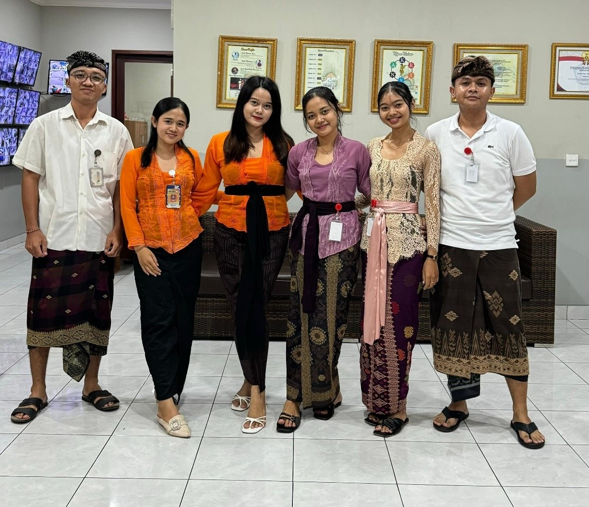
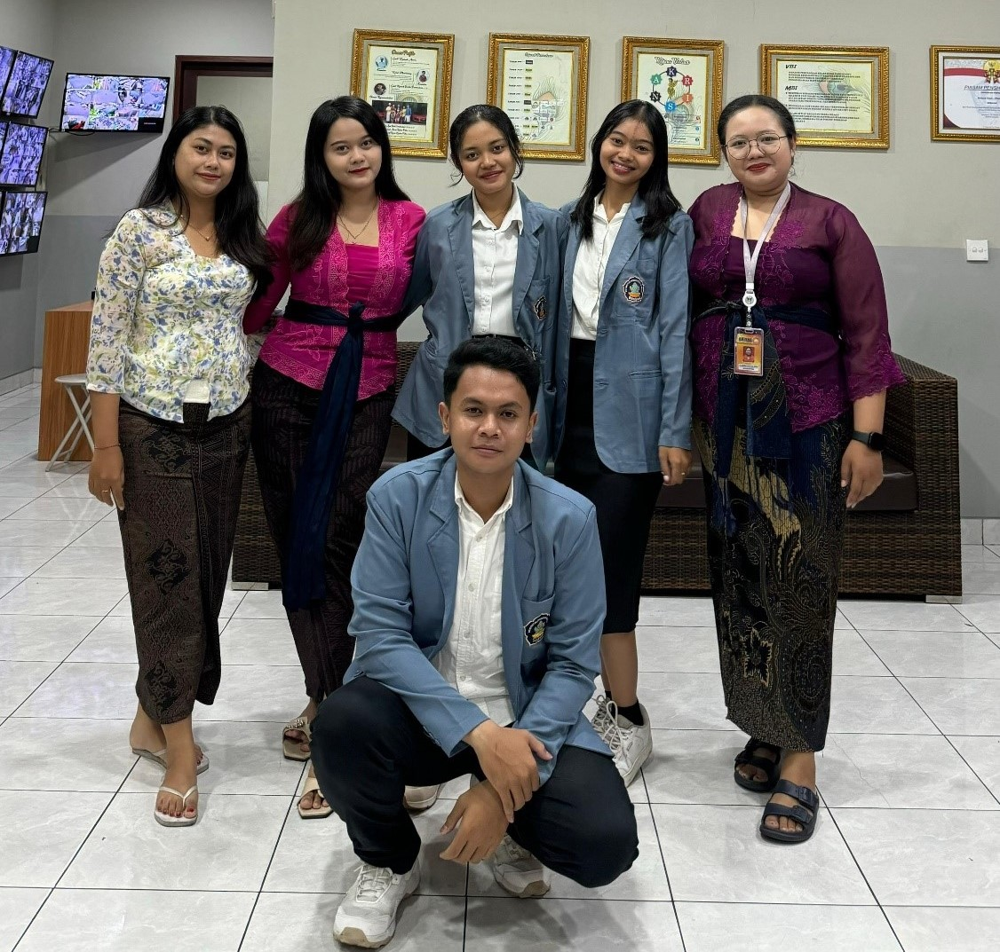
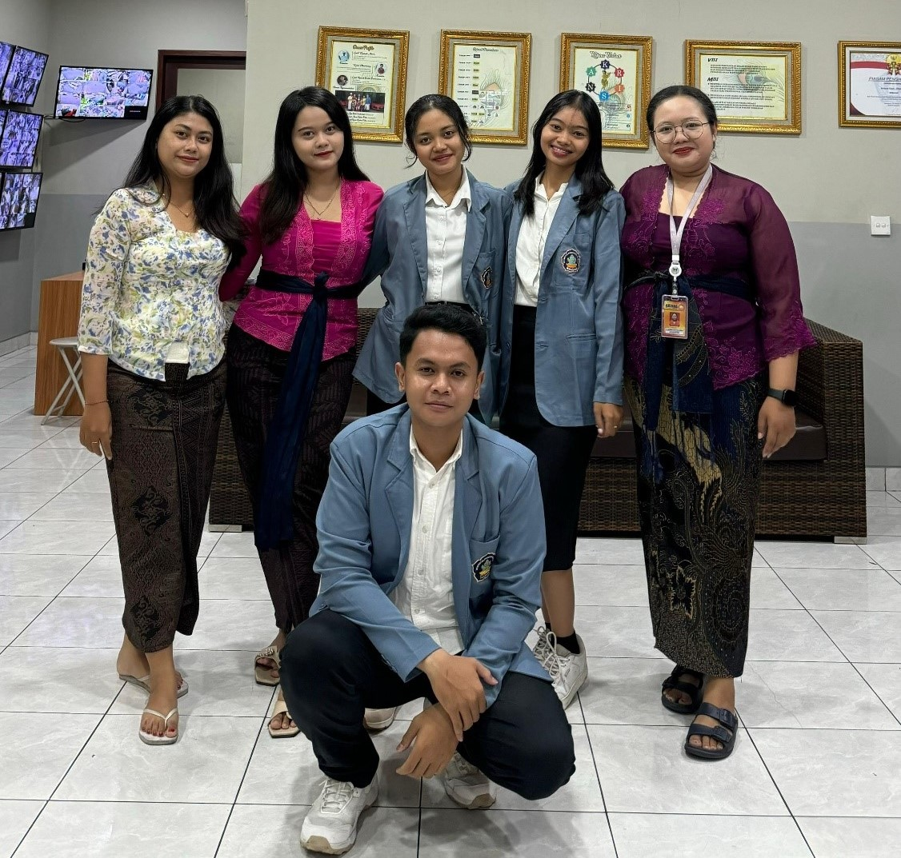

Divisi Keuangan Krisna Oleh Oleh Bypass
Dalam setiap usaha pastinya terdapat beberapa divisi yang akan bertanggung jawab terhadap kelancaran sebuah usaha. Pada Krisna Oleh Oleh Bypass terdapat banyak divisi, namun kali ini saya diberikan kesempatan untuk melaksanakan magang di 3 divisi, yaitu divisi keuangan, gudang, dan operasional.
Divisi keuangan berada di basement, tepatnya berada di office atau kantor. Dalam divisi keuangan terdapat 3 pembagian pekerjaan, yaitu 2 orang bertugas sebagai accounting, 2 orang bertugas sebagai keuangan atau finance, dan 1 orang bertugas sebagai pajak. Sesuai dengan Namanya, para accounting bertugas untuk membuat sistem akuntansi yang baik, mereka akan menginput nota atau faktur pembelian ke sistem yang sebelumnya sudah dibuat oleh divisi gudang, mereka mencatat semua pengeluaran baik debit maupun kredit ke dalam sistem yang nantinya akan diserahkan kepada pusat untuk dievaluasi. Kemudian untuk bagian keuangan mereka akan mengatur dan mencatat pengeluaran uang, baik itu gaji karyawan, pembayaran supplier, pemberian dana suka duka, ataupun yang lainnya, yang kemudian laporan tersebut akan dicek kembali oleh bagian accounting dan akan diserahkan kepada manajer. Lalu untuk bagian pajak ia bertugas untuk mencatat dan menginput semua aktifitas keuangan yang sekiranya akan berpengaruh pada pembayaran pajak usaha.
Di divisi keuangan, saya ditempatkan pada bagian accounting. Disini saya ditugaskan untuk membantu dalam melakukan pengecekan ulang terhadap nota yang baru diserahkan oleh gudang yang kemudian dilanjutkan dengan menginput faktur pembelian ke sistem, saya juga ditugaskan untuk menginput MDR atau potongan kartu kredit ke dalam sistem, serta menscan nota yang telah diinputkan ke dalam komputer. Tidak hanya itu, terkadang saya juga membantu bagian keuangan untuk menghitung uang yang akan digunakan untuk operasional usaha. Saya berada di divisi keuangan selama 1 bulan.


 
